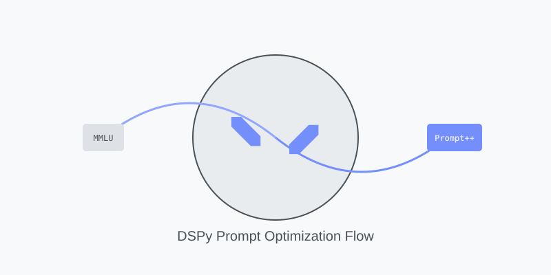

!pip install -q datasets
!pip install -U -q dspyBeyond Manual Prompts
evaluation
prompting
mmlu
dspy
Using DSPy to Match Meta’s MMLU Scores

Background & Motivation
Last time, in Challenges in Reproducing LLM Evaluation Results, I experienced first hand what a difficult task prompt engineering can be. The painful experience left me wondering if there was a better way.
Luckily, in my despair, I stumbled upon Declarative Self-improving Python (DSPy) via Hugo Brown-Anderson’s Vanishing Gradients podcast episode with Sander Schulhoff1, the lead author on The Prompt Report: A Systematic Survey of Prompting Techniques paper which came out over the summer2. In the podcast Sander revealed that he was able to best 20 hours of manual prompt engineering within 10 minutes using DSPy.
If a prompt engineering expert had such good results, surely this must be something I should try.
Understanding DSPy
From its GitHub repository DSPy is defined as “the open-source framework for programming—rather than prompting—language models”3. DSPy is a vast framework but for our purposes you can think of it as a way to automate the crafting the best prompt for a language model (LM) given set of inputs.
Let me give an example to illustrate the point.
Say you want a language model to create a recipe from a list of ingredients and a note about what types of foods you like. You don’t know what the ingredients are, or what the note will contain, but you can guarantee that both will be present as inputs. You also know that you want the output to be a short explanation of why the LM chose what it did, followed by the steps called for in the recipe.
How do you prompt your model? You could prompt:
“Given the following list of ingredients: {list} and note about preferences: {note} come up with a recipe for them to make. Respond first with an explanation of why you believe they will like it, then the recipe as a list of steps”
“You are a famous chef who has been given the following list of ingredients: {list}. Your task is to come up with the perfect dish for your client who likes: {note}. Respond with an explanation and then a detailed recipe”
“list: {list}; note: {note}; response: explanation: …, recipe: …”
There are infinite ways of prompting, and (much like the butterfly effect) subtle variations can lead to large changes in output.
That’s where DSPy comes in. Rather than spending hours crafting a prompt through trial and error you automate the process by providing the known elements (in the example above 1. a list of ingredients 2. a note about preferences 3. a desired explanation about why a recipe is given 4. the recipe) and labeled training data which objectively evaluates whether an output is “right” or not. Then you use one of DSPy’s optimization methods to automatically come up with and evaluate many different versions of the prompt to determine the best one for your task / model pair.
Implementation
Sounds easy enough, right? 🤔
To test out DSPy I decided to continue on with my pursuit of reproducing Meta’s Llama 3.1 8B Massive Multitask Language Understanding (MMLU)4 macro score of 73.025. My current best, via manual prompt engineering was 68.36. Let’s see if DSPy can best it!
Setup
First let’s install the DSPy framework and datasets (where we’ll pull the MMLU data from).
Next we need to tell DSPy which model(s) we want to use for our task. We’ll be using 2 models, OpenAI’s GPT-4o mini to optimize the text/copy for our prompt, and Meta’s Llama 8b for performing our task.
import os
import dspy
# NOTE: you'll need to have a HuggingFace Pro and OpenAI subscription tokens
# to run this. It will cost a few cents to run the entire notebook.
hf_token = os.getenv('HF_TOKEN')
oai_token = os.getenv('OAI_TOKEN')
# Model for prompt optimization/training
lm_train = dspy.LM("openai/gpt-4o-mini", api_key=oai_token, max_tokens=3000)
# Target model that will execute optimized prompts
lm_task = dspy.LM("huggingface/meta-llama/Meta-Llama-3.1-8B-Instruct", api_key=hf_token, max_tokens=3000)
dspy.configure(lm=lm_task)Next we’ll want to define a DSPy Signature which defines the LLM inputs and outputs used in our task.
class MMLUSignature(dspy.Signature):
"""Answer a multiple choice question."""
subject = dspy.InputField()
question = dspy.InputField()
choices = dspy.InputField()
answer: Literal['A', 'B', 'C', 'D'] = dspy.OutputField()This relatively simple class took quite a bit of effort to get right.
At first I wanted to over complicate things. I added tons of details and instructions to the class comment (which unintuitively maps to the prompt’s system instructions), and split the choices input into a choice for each multiple choice answer (choice_a, choice_b, etc.). I also failed to appreciate the usefulness of defining the answer as a Literal and started with a list of string choices.
With these, and other un-optimized (and down right buggy 😬) choices, I was unable to get great results, and at points almost decided to give up on this blog post.
Fortunately I persisted, and eventually stumbled into the DSPy Discord. That’s where I met the amazing okhattab, a DSPy Discord moderator, and wealthspring of DSPy tips and tricks. He very generously helped to shine light in the hole I had dug for myself, and worked with me as I slowly climbed my way out.
okhattab helped me to simplify my setup, explaining that I need to let go and let DSPy do all of the detail work. He also suggested I tried a Literal for my output type, and (kindly) pointed out the bugs in my code. He even went so far as to spend time playing around with, and providing feedback on my notebook. I can’t thank him enough.
Anyway, back to the code! 🚀
Using our signature we can make a custom DSPy module (aka. ‘program’) for our task:
class MMLUMultipleChoiceModule(dspy.Module):
temperatures = [1.0, 0.95, 0.85, 0.75]
def __init__(self):
self.predictor = dspy.ChainOfThought(MMLUSignature)
def forward(self, subject, question, choices, answer=None):
kwargs = dict(subject=subject, question=question, choices=choices)
for temp in self.temperatures:
try:
return self.predictor(**kwargs, config=dict(temperature=temp))
except Exception as e:
print(f" Excessive output with temperature {temp}, changing temperature...")
print("All attempts failed, making random guess")
guess_idx = random.randint(0, 3)
return dspy.Prediction(
reasoning="Random guess",
answer=['A', 'B', 'C', 'D'][guess_idx]
)Above you can see that we have a mostly vanilla dspy.ChainOfThought module that has been tweaked to explicitly try different temperatures if the model fails to output an answer in the correct format. This was needed because for certain questions the model would start looping its reasoning output and thus continue to generate until it maxed out its token limit without actually outputting an answer choice.
Data Prep
In order to use DSPy’s optimizers we will need to gather and prepare our MMLU data.
To do this we turn our labeled data (i.e. data with answers) into dspy.Examples that we can pass in to our DSPy wrapped model.
from dspy.datasets import DataLoader
def prepare_mmlu_dataset(split, subject):
kwargs = dict(
fields=('subject', 'question', 'choices', 'answer'),
input_keys=('subject', 'question', 'choices'),
split=split,
trust_remote_code=True
)
data = DataLoader().from_huggingface("cais/mmlu", subject, **kwargs)
dataset = [
dspy.Example(
subject=x.subject.replace("_", " ").title(),
question=x.question,
choices='\n'.join([f"{letter}. {c}" for letter, c in zip("ABCD", x.choices)]),
answer=['A', 'B', 'C', 'D'][x.answer]
).with_inputs("subject", "question", "choices") for x in data
]
print(f"{split}: prepared {len(dataset)} examples about {subject}")
return datasetInspecting our Prompt
Before we optimize let’s take a look at our starting prompt:
2024-12-13T22:31:49.372699
System message:
Your input fields are:
1. subject (str)
2. question (str)
3. choices (str)
Your output fields are:
1. reasoning (str)
2. answer (typing.Literal[A, B, C, D])
All interactions will be structured in the following way, with the appropriate values filled in.
[[ ## subject ## ]]
{subject}
[[ ## question ## ]]
{question}
[[ ## choices ## ]]
{choices}
[[ ## reasoning ## ]]
{reasoning}
[[ ## answer ## ]]
{answer} # note: the value you produce must be one of: A; B; C; D
[[ ## completed ## ]]
In adhering to this structure, your objective is:
Answer a multiple choice question.
[User message:]
[[ ## subject ## ]]
world_religions
[[ ## question ## ]]
As of 2016, about what percentage of adults aged 18 years or older were overweight?
[[ ## choices ## ]]
A. 10%
B. 20%
C. 40%
D. 80%
Respond with the corresponding output fields, starting with the field [[ ## reasoning ## ]], then [[ ## answer ## ]] (must be formatted as a valid Python typing.Literal[A, B, C, D]), and then ending with the marker for [[ ## completed ## ]].
[Response:]
[[ ## reasoning ## ]]
According to the World Health Organization (WHO), as of 2016, approximately 39% of adults aged 18 years or older were overweight. However, the closest option to this percentage is 40%.
[[ ## answer ## ]]
C
[[ ## completed ## ]]
You can see that even before optimization DSPy has formatted things nicely for us in a logical, structured way. Seems like a good starting point.
Prompt Optimization
With our models, program, and dataset ready to go we can now use DSPy to automatically determine the best prompt for our task!
DSPy has lots of optimization algorithms for various tasks7. I chose to use MIPROv2 as it came with a built in 0-shot CoT setting8, which aligned with the setup Meta had used.
One thing to notice is that DSPy uses 2 models to optimize the prompt. The first is via the prompt_model argument. Its role is to come up with different versions of your prompt during the optimization process. The second is the model passed in via the teacher_settings argument. This model helps to come up synthetic few-shot examples to include in your prompt.
Note
To take full advantage of MIPROv2’s ability I ended up adding few-shot examples, which deviates from Meta’s original setup of 0-shot CoT9.
def optimize(program, trainset, valset, metric, optimizer_model):
optimizer = dspy.MIPROv2(
metric=metric,
prompt_model=optimizer_model,
auto="medium",
max_bootstrapped_demos=5,
max_labeled_demos=0,
teacher_settings=dict(lm=optimizer_model)
)
return optimizer.compile(program, trainset=trainset, valset=valset, requires_permission_to_run=False)With our components in place, we can proceed with prompt optimization.
We will use the MMLU dev set’s all subject, which has 285 examples, for our prompt optimization. The MMLU validation set’s all subject will be used to test how our optimization is going.
We won’t be using the MMLU test set at all during optimization to avoid overfitting the prompt on specific test set questions. This principle is considered a best (and hopefully standard) practice in model training and it simulates a production use case of DSPy in which the data used to optimize your prompt will almost surely be different than the data used in production.
import random
program = MMLUMultipleChoiceModule()
metric = dspy.evaluate.answer_exact_match
subject = 'all'
trainset = prepare_mmlu_dataset('dev', subject)
valset = prepare_mmlu_dataset('validation', subject)
random.Random(0).shuffle(trainset)
random.Random(0).shuffle(valset)
print(f"Optimizing program for subject: {subject}; trainset: {len(trainset)} valset: {len(valset)}")
optimized_program = optimize(program, trainset, valset, metric, lm_train)
Note
We are using dspy.evaluate.answer_exact_match as our metric, which compares the model’s answer field to the expected value, which is perfect for our purpose (i.e. pred.answer == example.answer).
Inspecting the Optimized Prompt
Let’s see what we’ve got:
2024-12-13T14:10:42.452499
System message:
Your input fields are:
1. subject (str)
2. question (str)
3. choices (str)
Your output fields are:
1. reasoning (str)
2. answer (typing.Literal[A, B, C, D])
All interactions will be structured in the following way, with the appropriate values filled in.
[[ ## subject ## ]]
{subject}
[[ ## question ## ]]
{question}
[[ ## choices ## ]]
{choices}
[[ ## reasoning ## ]]
{reasoning}
[[ ## answer ## ]]
{answer} # note: the value you produce must be one of: A; B; C; D
[[ ## completed ## ]]
In adhering to this structure, your objective is:
In a high-stakes academic examination, you are required to answer a multiple-choice question that tests your understanding of complex concepts. Carefully analyze the given subject, question, and answer choices. Provide a detailed reasoning process that justifies your selection. Remember, your ability to think critically and differentiate between closely related concepts is essential for success. Here’s the question:
Subject: {subject}
Question: {question}
Choices: {choices}
Now, let's think step by step in order to arrive at the correct answer and reasoning. [User message:]
[[ ## subject ## ]]
Abstract Algebra
[[ ## question ## ]]
Find all c in Z_3 such that Z_3[x]/(x^2 + c) is a field.
[[ ## choices ## ]]
A. 0
B. 1
C. 2
D. 3
Respond with the corresponding output fields, starting with the field [[ ## reasoning ## ]], then [[ ## answer ## ]] (must be formatted as a valid Python typing.Literal[A, B, C, D]), and then ending with the marker for [[ ## completed ## ]].
[Assistant message:]
[[ ## reasoning ## ]]
To determine for which values of c in Z_3 the quotient ring Z_3[x]/(x^2 + c) is a field, we need to find values of c such that the polynomial x^2 + c is irreducible over Z_3. A polynomial is irreducible over a field if it cannot be factored into polynomials of lower degree.
The elements of Z_3 are {0, 1, 2}. We will check the irreducibility of the polynomial for each of these cases:
- For c = 0: The polynomial is x^2. It can be factored as x * x, so it is not irreducible.
- For c = 1: The polynomial becomes x^2 + 1. We check for roots in Z_3:
- x = 0: 0^2 + 1 = 1 (not a root)
- x = 1: 1^2 + 1 = 2 (not a root)
- x = 2: 2^2 + 1 = 4 + 1 = 5 mod 3 = 2 (not a root)
Since there are no roots in Z_3, the polynomial x^2 + 1 is irreducible.
- For c = 2: The polynomial becomes x^2 + 2. We check for roots in Z_3:
- x = 0: 0^2 + 2 = 2 (not a root)
- x = 1: 1^2 + 2 = 1 + 2 = 3 mod 3 = 0 (is a root)
Since it has a root, the polynomial x^2 + 2 can be factored and is thus reducible.
From this analysis, we find that the only c in Z_3 for which Z_3[x]/(x^2 + c) is a field is when c = 1.
[[ ## answer ## ]]
B
[[ ## completed ## ]]
[User message:]
[[ ## subject ## ]]
Logical Fallacies
[[ ## question ## ]]
If someone attacks the character of an opposing arguer, instead of responding to that opponent’s arguments, the first person has probably committed which of the following fallacies?
[[ ## choices ## ]]
A. tu quoque
B. horse laugh
C. argument against the person
D. ignoratio elenchi
Respond with the corresponding output fields, starting with the field [[ ## reasoning ## ]], then [[ ## answer ## ]] (must be formatted as a valid Python typing.Literal[A, B, C, D]), and then ending with the marker for [[ ## completed ## ]].
[Assistant message:]
[[ ## reasoning ## ]]
The described situation involves attacking an individual’s character rather than addressing their arguments, which is the definition of the “argument against the person” fallacy, commonly referred to as ad hominem. This fallacy distracts from the actual debate by focusing instead on the opponent’s character instead of the merits of the argument presented.
[[ ## answer ## ]]
C
[[ ## completed ## ]]
[User message:]
[[ ## subject ## ]]
High School Mathematics
[[ ## question ## ]]
Five thousand dollars compounded annually at an \(x\%\) interest rate takes six years to double. At the same interest rate, how many years will it take \(\$300\) to grow to \(\$9600\)?
[[ ## choices ## ]]
A. 12
B. 1
C. 30
D. 5
Respond with the corresponding output fields, starting with the field [[ ## reasoning ## ]], then [[ ## answer ## ]] (must be formatted as a valid Python typing.Literal[A, B, C, D]), and then ending with the marker for [[ ## completed ## ]].
[Assistant message:]
[[ ## reasoning ## ]]
To solve the problem, we start with the information that $5000 doubles in 6 years at an interest rate of \(x\%\). The formula for compound interest is given by:
[ A = P(1 + r)^t ]
where:
- (A) is the amount of money accumulated after n years, including interest.
- (P) is the principal amount (the initial amount of money).
- (r) is the annual interest rate (decimal).
- (t) is the time the money is invested or borrowed for, in years.
For the first scenario with $5000:
[ 10000 = 5000(1 + r)^6 ]
Dividing both sides by 5000 gives:
[ 2 = (1 + r)^6 ]
Taking the sixth root of both sides, we find:
[ 1 + r = 2^{1/6} ]
Thus:
[ r = 2^{1/6} - 1 ]
Next, we need to determine how long it will take for $300 to grow to $9600 at the same interest rate (r). The equation we will use is:
[ 9600 = 300(1 + r)^t ]
Dividing both sides by 300 gives:
[ 32 = (1 + r)^t ]
Replacing (1 + r) with (2^{1/6}) gives:
[ 32 = (2{1/6})t ]
As (32 = 2^5), we can equate the exponents:
[ 5 = ]
Thus:
[ t = 5 = 30 ]
Therefore, it will take 30 years for $300 to grow to $9600 at the same interest rate.
[[ ## answer ## ]]
C
[[ ## completed ## ]]
[User message:]
[[ ## subject ## ]]
Medical Genetics
[[ ## question ## ]]
DNA ligase is
[[ ## choices ## ]]
A. an enzyme that joins fragments in normal DNA replication
B. an enzyme of bacterial origin which cuts DNA at defined base sequences
C. an enzyme that facilitates transcription of specific genes
D. an enzyme which limits the level to which a particular nutrient reaches
Respond with the corresponding output fields, starting with the field [[ ## reasoning ## ]], then [[ ## answer ## ]] (must be formatted as a valid Python typing.Literal[A, B, C, D]), and then ending with the marker for [[ ## completed ## ]].
[Assistant message:]
[[ ## reasoning ## ]]
DNA ligase is an enzyme that plays a crucial role in DNA replication and repair by joining together Okazaki fragments on the lagging strand, thereby sealing nicks and gaps in the DNA backbone. Therefore, option A accurately describes the function of DNA ligase as it pertains to normal DNA replication.
[[ ## answer ## ]]
A
[[ ## completed ## ]]
[User message:]
[[ ## subject ## ]]
College Chemistry
[[ ## question ## ]]
Which of the following statements about the lanthanide elements is NOT true?
[[ ## choices ## ]]
A. The most common oxidation state for the lanthanide elements is +3.
B. Lanthanide complexes often have high coordination numbers (> 6).
C. All of the lanthanide elements react with aqueous acid to liberate hydrogen.
D. The atomic radii of the lanthanide elements increase across the period from La to Lu.
Respond with the corresponding output fields, starting with the field [[ ## reasoning ## ]], then [[ ## answer ## ]] (must be formatted as a valid Python typing.Literal[A, B, C, D]), and then ending with the marker for [[ ## completed ## ]].
[Assistant message:]
[[ ## reasoning ## ]]
The statement that is NOT true among the options provided is D. The atomic radii of the lanthanide elements do not increase across the period from La to Lu; instead, they generally decrease due to the increased nuclear charge which pulls the electrons closer to the nucleus. Thus, option D is the incorrect statement, while A, B, and C are true regarding lanthanide elements.
[[ ## answer ## ]]
D
[[ ## completed ## ]]
[User message:]
[[ ## subject ## ]]
world_religions
[[ ## question ## ]]
As of 2016, about what percentage of adults aged 18 years or older were overweight?
[[ ## choices ## ]]
A. 10%
B. 20%
C. 40%
D. 80%
Respond with the corresponding output fields, starting with the field [[ ## reasoning ## ]], then [[ ## answer ## ]] (must be formatted as a valid Python typing.Literal[A, B, C, D]), and then ending with the marker for [[ ## completed ## ]].
[[ ## reasoning ## ]]
According to the World Health Organization (WHO), as of 2016, approximately 39% of adults aged 18 years or older were overweight. This percentage is based on data from the WHO’s 2016 report on the global obesity and overweight prevalence.
[[ ## answer ## ]]
C
[[ ## completed ## ]]
Whoa, that has changed quite a bit from our original prompt! The structure is the same, but the instructions have changed drastically, and few shot examples have been added.
During the optimization process DSPy tried 25 different versions of instructions and tested them against our training data to determine which were the best candidates. You can control this and many other parameters in the optimization process by setting the auto argument to light, medium, heavy (we’ve chosen medium), or by manually setting values in the optimizer’s initializtion parameters.10
Note
The structure can change too. I’ve seen runs that returned json response formatting, in addition to the structure seen above.
Evaluation
With our optimized program ready to go we can now benchmark our program / model pair on MMLU.
from dspy.evaluate import Evaluate
def evaluate(dataset, program, metric):
evaluator = dspy.Evaluate(devset=dataset, num_threads=16, metric=metric, display_progress=True, display_table=5)
return evaluator(program, metric=metric)To do this we’ll use the MMLU test set, which we withheld during optimization:
import json
scores = [] # Track per-subject accuracy scores
total_right = []
total_questions = []
subjects = ['abstract_algebra', 'anatomy', 'astronomy', 'business_ethics', 'clinical_knowledge', 'college_biology', 'college_chemistry', 'college_computer_science', 'college_mathematics', 'college_medicine', 'college_physics', 'computer_security', 'conceptual_physics', 'econometrics', 'electrical_engineering', 'elementary_mathematics', 'formal_logic', 'global_facts', 'high_school_biology', 'high_school_chemistry', 'high_school_computer_science', 'high_school_european_history', 'high_school_geography', 'high_school_government_and_politics', 'high_school_macroeconomics', 'high_school_mathematics', 'high_school_microeconomics', 'high_school_physics', 'high_school_psychology', 'high_school_statistics', 'high_school_us_history', 'high_school_world_history', 'human_aging', 'human_sexuality', 'international_law', 'jurisprudence', 'logical_fallacies', 'machine_learning', 'management', 'marketing', 'medical_genetics', 'miscellaneous', 'moral_disputes', 'moral_scenarios', 'nutrition', 'philosophy', 'prehistory', 'professional_accounting', 'professional_law', 'professional_medicine', 'professional_psychology', 'public_relations', 'security_studies', 'sociology', 'us_foreign_policy', 'virology', 'world_religions']
for subject in subjects:
testset = prepare_mmlu_dataset('test', subject)
print(f"Evaluating subject: {subject}; testset size: {len(testset)}")
score = evaluate(testset, optimized_program, metric)
score_as_percent = score / 100
scores.append(score_as_percent) # Store subject-level score
num_questions = len(testset)
right = int(num_questions * score_as_percent)
total_questions.append(num_questions)
total_right.append(right)
print(f"Subject ({subject}) score: {score_as_percent} ({right} / {num_questions})")
print(f"Average score (macro): {sum(scores) / len(scores)}") # Average of subject scores
print(f"Average score (micro): {sum(total_right) / sum(total_questions)}") # Total correct / total questionsResults
With this (carefully crafted but) simple setup we have achieved a macro score of 71.1 and a micro score of 68.9. This blew my previous best macro score of 68.3 out of the water.
For comparison, running the code without optimizing our program resulted in a scores of ~45 and ~44 respectively.
Note
Note that your mileage will vary. The prompt optimization process is stochastic, meaning that you will get a slightly different result each time you optimize.
Tip
But don’t take my word for it, try it out yourself.
Concluding thoughts
This experience has taught me a few things.
First and foremost, it allowed me to get within spitting distance of Meta’s claimed 73.0 MMLU score11.
Secondly it has given me the confidence that if you can define your LM task as a prompt containing inputs and outputs, and you have objective evaluations for your task, then DSPy can likely provide a huge service.
Third, and possibly most importantly, it has taught me how helpful, knowledgeable, and kind okhattab and the DSPy Discord community is. I couldn’t have gotten here without their help.
Not only was I able to get better results than my manual efforts using DSPy, but also now that I have my program configured I can quickly and easily re-optimize my prompt any time my model changes, or I get new data. It’s all automagical with DSPy.
Hasta la próxima.
If you’ve got a questions or comment please feel free to email me at chuckfinca at gmail dot com.
Footnotes
Bowne-Anderson, H. (2024, October 8). Prompt Engineering, Security in Generative AI, and the Future of AI Research Part 2 [Audio podcast episode]. Vanishing Gradients. https://vanishinggradients.fireside.fm/37↩︎
Schulhoff, S., Ilie, M., Balepur, N., Kahadze, K., Liu, A., Si, C., Li, Y., Gupta, A., Han, H., Schulhoff, S., Dulepet, P. S., Vidyadhara, S., Ki, D., Agrawal, S., Pham, C., Kroiz, G., Li, F., Tao, H., Srivastava, A., Da Costa, H., Gupta, S., Rogers, M. L., Goncearenco, I., Sarli, G., Galynker, I., Peskoff, D., Carpuat, M., White, J., Anadkat, S., Hoyle, A., & Resnik, P. (2024). The Prompt Report: A Systematic Survey of Prompting Techniques. arXiv. https://arxiv.org/abs/2406.06608v3↩︎
Khattab, O., Singhvi, A., Maheshwari, P., Zhang, Z., Santhanam, K., Vardhamanan, S., Haq, S., Sharma, A., Joshi, T. T., Moazam, H., Miller, H., Zaharia, M., & Potts, C. (2024). DSPy: The framework for programming—not prompting—language models [Computer software]. GitHub. https://github.com/stanfordnlp/dspy↩︎
Hendrycks, D., Burns, C., Basart, S., Zou, A., Mazeika, M., Song, D., & Steinhardt, J. (2021). Measuring massive multitask language understanding. arXiv. https://arxiv.org/abs/2009.03300↩︎
Meta. (2024, July 23). Introducing Llama 3.1: Our most capable models to date. Meta AI. https://ai.meta.com/blog/meta-llama-3-1/↩︎
To reproduce:
↩︎git clone https://github.com/chuckfinca/evaluate.git cd evaluate git checkout 3203ed4 python evaluate/evaluate/main.py original_mmlu_config.jsonDSPy.ai. (n.d.). DSPy optimizers (Version 2.5.40). Retrieved December 11, 2024, from https://dspy.ai/cheatsheet/?h=ass#activating-dspy-program-with-assertions:~:text=(your_dspy_program)-,DSPy%20Optimizers,-LabeledFewShot↩︎
DSPy. (2024). Optimizing instructions only with MIPROv2 (0-shot). Retrieved November 26, 2024, from https://dspy.ai/deep-dive/optimizers/miprov2#optimizing-instructions-only-with-miprov2-0-shot↩︎
Meta. (2024, July 23). Introducing Llama 3.1: Our most capable models to date. Meta AI. https://ai.meta.com/blog/meta-llama-3-1/↩︎
DSPy.ai. (n.d.). MIPROv2 Optimizer: Initialization Parameters (Version 2.5.40). Retrieved December 14, 2024, from https://dspy.ai/deep-dive/optimizers/miprov2#__codelineno-6-19:~:text=for%20task%20execution.-,auto,-Optional%5Bstr%5D↩︎
Meta. (2024, July 23). Introducing Llama 3.1: Our most capable models to date. Meta AI. https://ai.meta.com/blog/meta-llama-3-1/↩︎